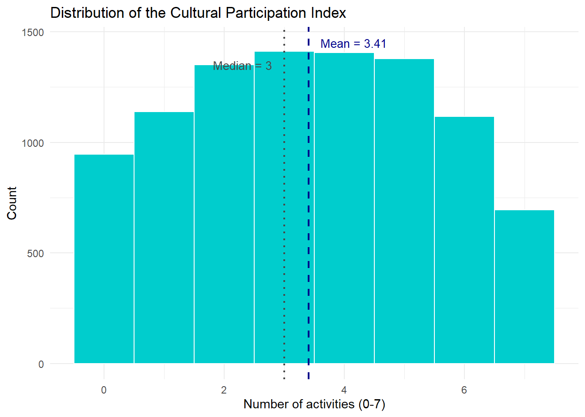

Individual and country-level determinants of youth cultural participation in Europe: a Multilevel Analysis using Eurobarometer data (2007 and 2013)
Cultural participation is a right enshrined in the United Nations Declaration of Human Rights, a key element for the quality of individual and collective life, able to generate positive effects on individual opportunities, quality of life and wellness as a whole. Its study should take into account a broad spectrum of cultural activities and analyse how both individual characteristics and social and contextual features affect it.
Research question and hypotheses
The research aims to understand to what extent do individual-level factors (internet use for cultural purposes, education, socioeconomic status) and country-level factors (GDP per capita, government expenditure on culture) explain participation in cultural activities among young Europeans (15–29 years old) and how did this relationship change between 2007 and 2013.
The main hypotheses are the following:
Individual internet use is associated with physical cultural participation among young Europeans, net of educational attainment and employment status. The direction of the effect (positive = complement; negative = substitute) is determined empirically;
The association between internet use and cultural participation changed between 2007 and 2013, when social media and digital platforms developed.
Young people living in countries with higher GDP per capita show higher cultural participation rates, independently of individual-level socioeconomic characteristics;
Young people living in countries with higher government expenditure on culture show higher participation rates independently of national wealth.
The central theoretical point focuses on digitalization and its relationship with cultural participation, is to understand whether digital culture replaces physical cultural attendance and/or complements it.
Data and variable operationalization
Data come from two Special Eurobarometers: Eurobarometer 278 “European cultural values” and Eurobarometer 399 “Cultural Access and Participation”, two surveys conducted by the European Commission in 2007 and 2013 in which around 27.000 European citizens were interviewed face-to-face in their homes across all 27 EU countries. Each person answered questions about their cultural participation.
These data were pooled into a single cross-sectional dataset of 9,131 young Europeans aged 15–29 across 27 countries. The unit of analysis is the individual, nested within country-years.
The dependent variable is an index of cultural participation (0–7), counting the number of activities attended at least once in the last 12 months (cinema, theatre, concert, museum, monuments, library, ballet). The index follows an approximately symmetric, bell-shaped distribution (mean = 3.41, median = 3), with only 10% scoring zero, supporting the use of a linear multilevel model.
The main independent variable is internet use for cultural purposes. A key limitation is that this variable is operationalized differently across waves: in 2007 it measures general internet use frequency, while in 2013 it captures specifically cultural internet use, introducing partial non-comparability. Country-level predictors include GDP per capita PPS and government expenditure on culture (% GDP), both from Eurostat (2007 and 2013). Control variables include educational attainment (age when stopped full-time education, recoded into three categories: low/medium/high), employment status, sex, and a year dummy (2007/2013).
All continuous predictors are standardised (z-scores), country-level variables are centred at their cross-country mean to improve interpretability of the intercept.
Model choice and statistical justification
The nested structure of the data, individuals within country-years, requires a multilevel model, with random intercepts by country-year. The model allows baseline participation rates to vary across European contexts while estimating fixed effects for both individual- and country-level predictors.
Given the distributional properties of the outcome described in the previous pharagraph, a linear multilevel model is preferred over a multilevel Poisson or negative binomial model.